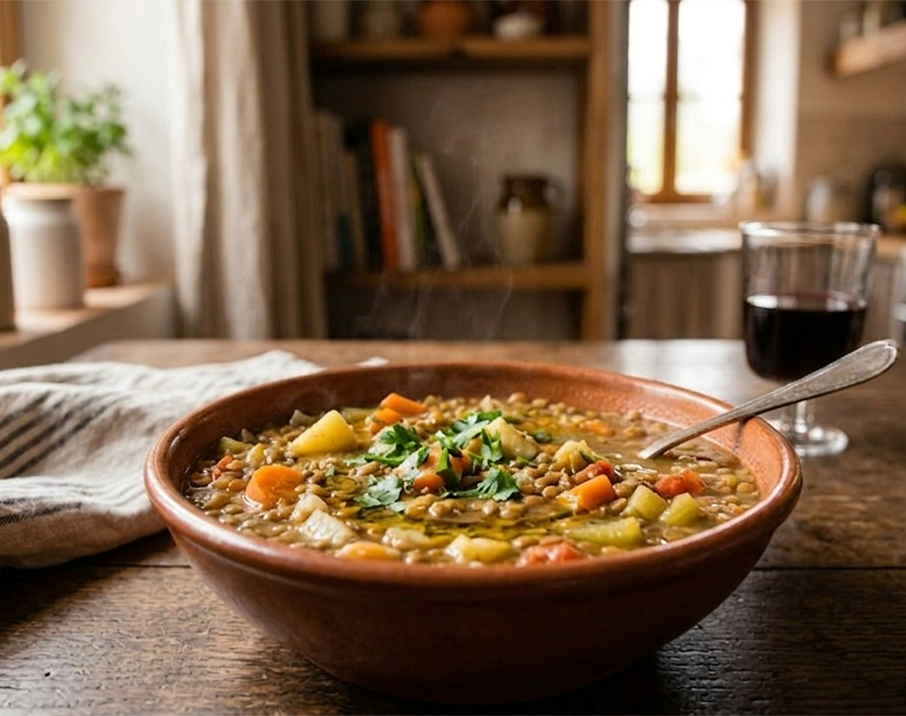

Receta saludable
Lentejas con verduras
Plato sencillo, nutritivo y económico, ideal para preparar varias raciones.

Plato sencillo, nutritivo y económico, ideal para preparar varias raciones.
Plato sencillo, nutritivo y económico, ideal para preparar varias raciones.
Preparar varias raciones y dejar comida lista para 2 o 3 días.
Guarda raciones en la nevera para tener comida lista durante 2 o 3 días.